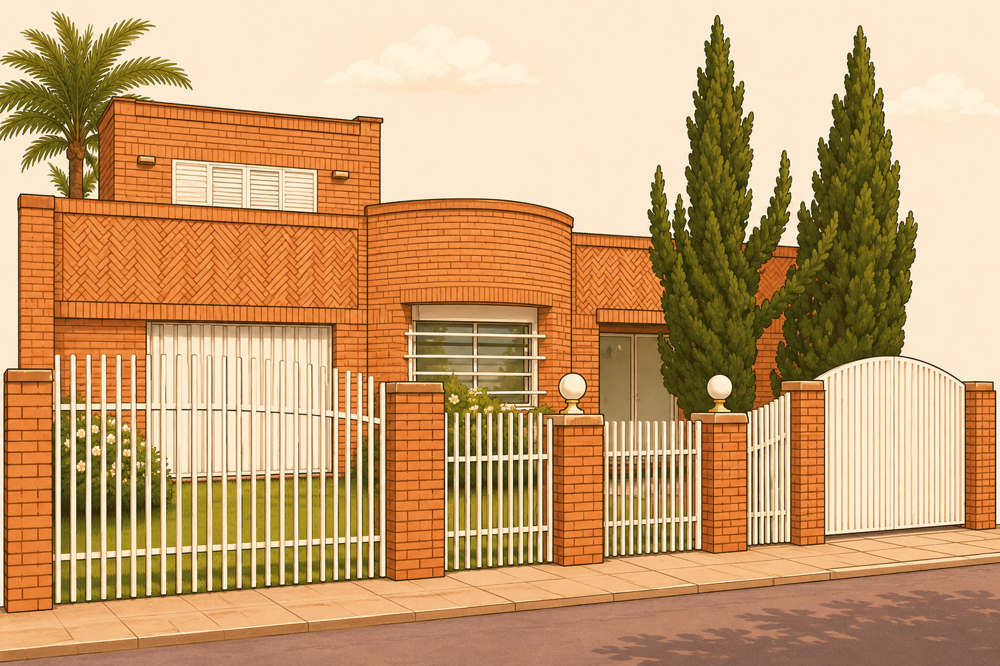

Hora de descansar
Uma pausa merecida para renovar as energias e seguir sua caminhada.
Depois de tantos passos, nada melhor que um cantinho cheio de carinho para descansar. A Vó Ditinha te espera no Caminho da Fé! 💛

A jornada é feita de muitos passos, paisagens e histórias. Nossa missão é fazer da sua parada um momento leve e especial.
Uma pausa merecida para renovar as energias e seguir sua caminhada.
O carinho e a hospitalidade que tornam cada encontro uma boa lembrança.
Em Paraisópolis, Minas Gerais, pertinho da história de tantos peregrinos.
O Caminho da Fé é feito de superação, encontros e muita emoção. E a Pousada Vó Ditinha quer fazer parte dessa história com você.
Chegue, respire fundo e aproveite a pausa. Amanhã tem mais estrada e novas conquistas!
Planejar minha parada →Em breve, fotos reais para você conhecer cada detalhe antes de chegar!
Espaços reservados para fotos oficiais da pousada. Nenhuma estrutura ou serviço não confirmado foi anunciado.
No coração das montanhas mineiras e no percurso do Caminho da Fé, a Pousada Vó Ditinha é uma parada para descansar e seguir viagem com o coração leve.
Ver Paraisópolis no mapa ↗O endereço exato será adicionado quando informado.
Quer saber mais sobre a hospedagem? Entre em contato e planeje sua parada.
Solicitar informações ✉Botão temporário: será substituído pelo WhatsApp oficial da pousada.